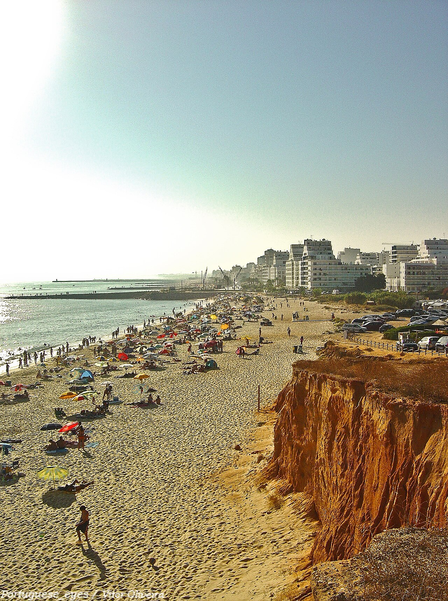
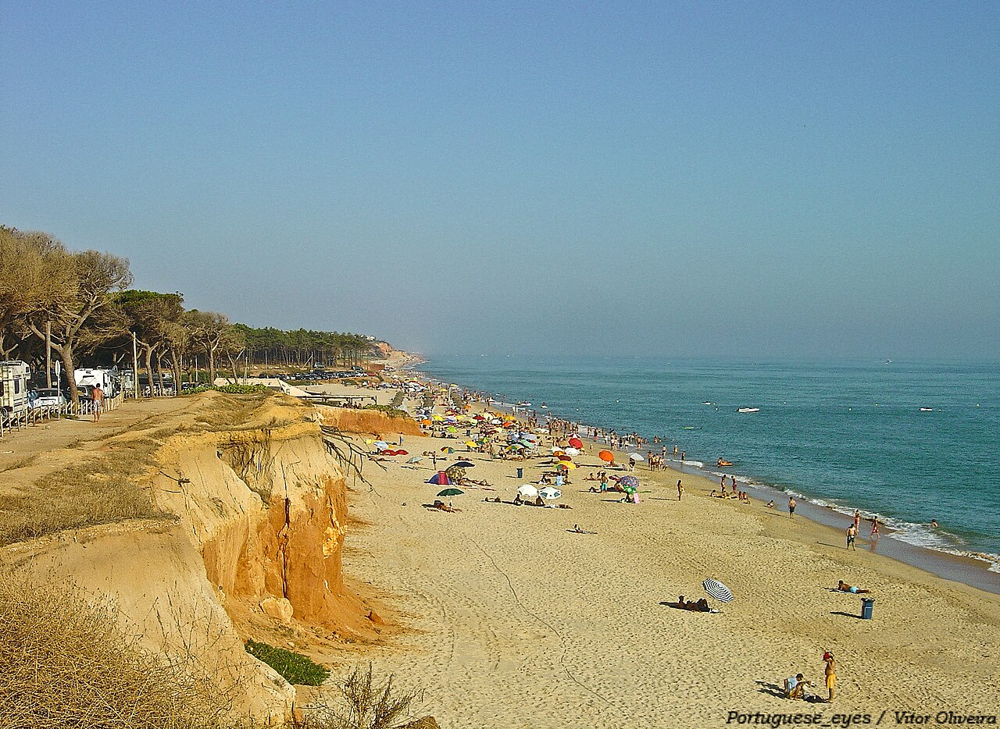
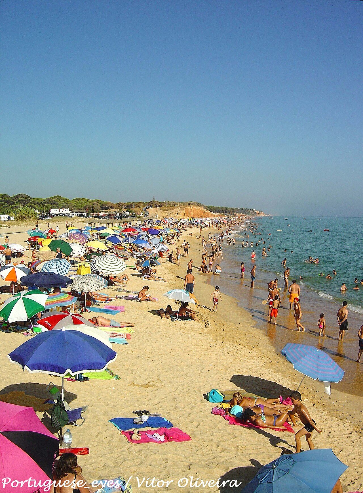

The quieter beach a 5-minute walk west of Quarteira's main strip. Same Atlantic, same sun - but fewer bodies, fewer beach bars, and a longer empty stretch to walk. The alt if Quarteira beach feels too busy.



Forte Novo starts where the Quarteira promenade ends and stretches west toward Vale do Lobo. It's one beach physically - the same sand, the same Atlantic - but on a map and in vibes it's the next zone over. Less built-up, no marina, no bars right on the path. A few beach restaurants behind the dunes and that's it.
Walk it westward and after about 25 minutes you start hitting the orange Vale do Lobo cliffs - same family as Praia da Falésia further along. Good for a longer beach walk than the promenade gives. Stay sun-aware - very little shade until you reach the cliffs.